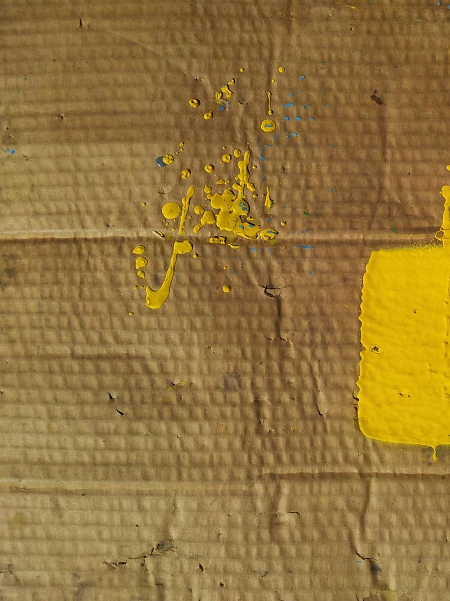

Work & Play
A portfolio of work by Gerry Straathof
Back
A portfolio of work by Gerry Straathof
Contents
“ If your eyes are open, you can see anything. ”
for how I work
Basis for how I work
I see everything, but I don't always understand it. I have worked in several artistic mediums, including painting, drawing and photoraphy. My work with photography has also led me into fnding alternatve ways of working with digital images, which led me to media arts. My degree is in digital arts and media technologies because that is the only way I can see the images at the size I envision them. If they cannot place you within that space then they are too small.
I have begun trying to find ways of including the viewers presence within the piece to alter it and change how it behaves.
Modern Heiroglyphics 2012
We all do it, cupping our hands around a window to see what is inside, It's almost an unconcious reaction to fulfill our monkey instinct, to look behind the curtain. What happens when we discover mysteries inside, things we can't understand or comprehend. Random patterns, simple sigils, complicated curiosities. Or just kids with a spray can.
Chaos and Order, 2011
Have you ever wondered what lies underneath a facade of rigid patterns and coerced order? Rip the walls aside so one can see within the structure, the skeleton under the skin. Such fragility under unsuspecting surfaces. What lies beneath can be speak more than the patterns over top.
Experiments
Bowness Experiments
Bowness Trestle 5, 2012
Bowness Trestle 4, 2012
Bowness Trestle 3, 2012
Bowness Trestle 2, 2012
Bowness Trestle 1, 2012
I often wonder what the view would be from places I couldn't reach, and if it would be interesting to see several images from those different places at exactly the same time...
So I built a way to do it. This is just one of the results, stills from a series of videos under a railway trestle in Bowness.
upon words
Unsurrection, 2011

Underneath the skin,
the skeleton,
the truth
A broken soul,
a promise,
a grid of wood
If you see,
It exists,
It is real
If you don't
the answer
may never be known
Inside doors, 2012
this document
The Engine
ProtoAndretti, 2012
This little project is powered by a Publishing Engine which I have been developing myself
The goal is to allow people to publish their own content on the net in a magazine format as easily as it is to upload to flickr.
This part of the engine has taken 20 months to get to this point, but the end result will be to allow the creation of content online to share through a community of like minded people.
If you would like more information on the engine, it's use and possible variations, please feel free to contact myself, the creator: Gerry Straathof. I'm a recent graduate from the Media and Digital Technologies program at the Alberta College of Art and Design.